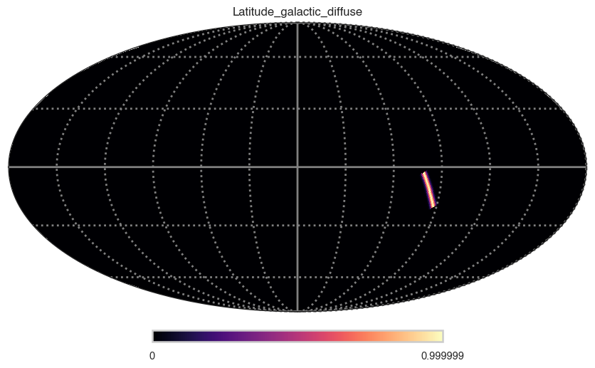

Latitude galactic diffuse
[3]:
# Parameters
func_name = "Latitude_galactic_diffuse"
Description
[5]:
func.display()
- description: A Gaussian distribution in Galactic latitude around the Galactic plane
- formula: $ K \exp{\left( \frac{-b^2}{2 \sigma_b^2} \right)} $
- parameters:
- K:
- value: 1.0
- desc: normalization
- min_value: None
- max_value: None
- unit:
- is_normalization: False
- delta: 0.1
- free: True
- sigma_b:
- value: 1.0
- desc: Sigma for
- min_value: None
- max_value: None
- unit:
- is_normalization: False
- delta: 0.1
- free: True
- l_min:
- value: 10.0
- desc: min Longtitude
- min_value: None
- max_value: None
- unit:
- is_normalization: False
- delta: 1.0
- free: True
- l_max:
- value: 30.0
- desc: max Longtitude
- min_value: None
- max_value: None
- unit:
- is_normalization: False
- delta: 3.0
- free: True
- K:
Shape
The shape of the function on the sky.
[6]:
m=func(ra, dec)
hp.mollview(m, title=func_name, cmap="magma")
hp.graticule(color="grey", lw=2)
